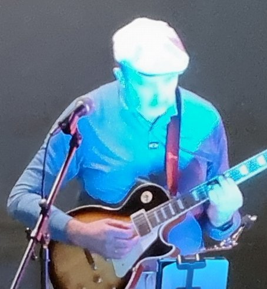

The story of OneSpec

My name is Sasha Ovsankin. I am a software engineer by trade and a jazz musician at heart. Over the years, I have been grappling with the need to develop faster while staying in control of the direction and the final result. I even tried to build a product around this, but the technology wasn’t there yet.
With modern AI tools, the dream of spec-driven development became a reality, and OneSpec is the result of the last few months of experimenting in the space.
I have run this process on several of my own projects and feel it is now ready for other people to try. So put on your creative hat and head over to the documentation to start creating software the way jazz is played: spontaneously, but with a clear sense of where you want to go.